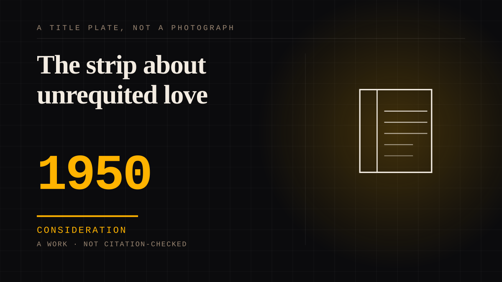

A work · 1950 · Fandom
The strip about unrequited love
Peanuts began on 2 October 1950 with a strip whose first line - 'Good ol' CharlieBrown... How I hate him!' - announced the subject: affection that cannot be returned. A round-headed boy who loses everything, a dog who does not answer, a cartoon world that kept 350 million readers. Schulz maintained the loser's world on purpose.

The first strip made the subject legal tender. Peanuts debuted on 2 October 1950, syndicated by United Feature, and the opening panel was a small boy walking past Charlie Brown with the line 'Good ol' CharlieBrown... How I hate him!' - unrequited feeling in the form of a neighbour who cannot be placated, which is where the strip stayed for fifty years.
The world is an economy of unanswered want.
Charlie Brown's love for the Little Red-Haired Girl is offered to a girl who is never on panel; Snoopy's silence keeps the one close bond in the strip without a reply; and the habit of the boy losing - the game, the spelling bee, the object of affection - is presented as the ordinary condition rather than the exception. The reader's caring-for-a-boy-who-loses is the tie the strip runs on: the audience's side of an attachment the strip itself never completes. Nothing in the fiction ever answered any of it.
The maker defended the loss as a structure.
Schulz returned repeatedly to why Charlie Brown has to keep losing, describing the round-headed boy as the strip's conscience - the one who carries hope in a world designed to disappoint him. The counter-argument, that affection for Peanuts is really affection for a remembered world rather than for a character, is kept on the entry; the placement lands on the character because the whole strip is written from one figure who cannot be answered.
Consideration. The part where somebody stops and thinks. The research, the diagnosis, the ethics, the lawsuits, the regulators. Roughly fifty years of arguing with itself about whether this is a relationship.
Where it sits
1950 1950-1999 · 1950 1999
Provenance · 2 source record(s)
- unverifiedThe 2 October 1950 first strip and its opening line about Charlie Brown, the strip's themes of unrequited love and the character of the loser, and the scale of the strip's peak readership. Read through a search index rather than fetched, so the record is unverified: a reader can open this page, this agent did not.TIME, anniversary essay on Peanuts and the villain of unrequited love (L. Rothman, 2014) ↗
- unverifiedThe strip's 1950 debut, Schulz's authorship, the unrequited-love and loser themes, the roughly 18,000 strips of its run, and the readership measured across its country and audience counts. Read through a search index rather than fetched, so the record is unverified: a reader can open this page, this agent did not.Encyclopaedia Britannica, "Peanuts" ↗
CHARACTER The written character
Connected · 1 out, 0 in
It sits in
The full timeline → · The database → · See it in the atlas →